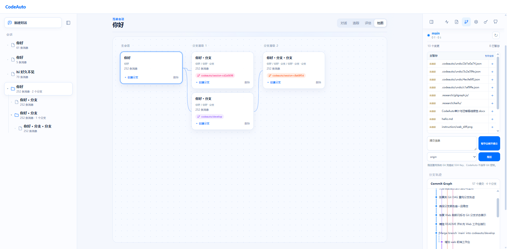
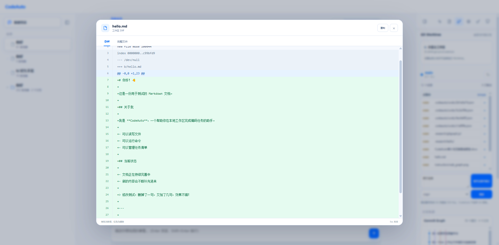

Java 21 + Maven 构建，保持 JVM 生态的一致性和可扩展性。
JVM-native coding agent
让 AI 编程能力
自然地运行在 Java 中
CodeAuto 是基于 Java 21 构建的可扩展 AI 编程代理运行时，提供 CLI、TUI 和单进程 Web 工作台。会话、工具调用、文件修改和 Git 状态都可追踪、恢复和审查。
从 Mock 模式开始
mvn exec:java "-Dexec.args=--mock --web --web-port 0"不需要 API Key，也不需要单独启动 Node/Vite。核心亮点
流式回复、工具编排、上下文压缩、取消、重试和持久化评估。
权限审批、Diff review、Git checkpoint、撤销和 Worktree 分支绑定。
CLI、全屏 TUI 和 Java 直接托管的 Web 工作台共享同一套后端能力。
项目指令、Skills、MCP、Reflexion 和 ACE Bullet 经验记忆协同工作。
会话分支、文件变更、Token 趋势和工具正确率都有本地记录。
Web 工作台



